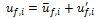
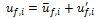

| Volume 1, Issue 2 - Year 2012 - Pages 95-101 | View PDF (Full-text) |
| DOI: 10.11159/ijmem.2012.012 | Linked References |
| ISSN: 1929-2724 | |
Effect of Anisotropy on Particle Deposition in Impinging Jet Flow
Eid S. Alatawi, Edgar A. Matida
Carleton University, Department of Mechanical and Aerospace Engineering
1125 Colonel By Drive, Ottawa, Ontario, Canada K1S5B6
ealatawi@connect.carleton.ca; edgar.matida@mae.carleton.ca
Abstract- This study presents a numerical prediction of particle deposition on an impingement wall for nozzle-to-surface distance, L/D = 2. The continuous phase flow was solved using Reynolds-averaged Navier Stokes (RANS) along with Baseline Reynolds stress turbulence model (RSM-BSL). The particulate phase was simulated using a one-way coupling Lagrangian random-walk eddy-interaction model (EIM). The particle deposition density using turbulent tracking and mean flow tracking was predicted and the effect of the near-wall correction of the normal Reynolds stress component was evaluated. The effect of anisotropic flow using the minimum eddy lifetime is examined. To assess the accuracy of EIM in framework of RANS, large eddy simulation (LES) with Lagrangian particle tracking was used to predict the particle deposition in impinging jet flow. LES prediction was compared to RANS/EIM predictions and experimental data. Moreover, simulation findings demonstrate the superiority of LES compared to RANS/EIM in predicting the particle deposition. The results obtained using RANS/EIM showed that the deposition of the particles using the minimum eddy lifetime and near-wall correction yields close results to LES prediction and the experimental data. In addition, the deposition exhibits a ring-like pattern similar to experiments.
Keywords: Impinging Jet, Eddy Interaction Model, Near-Wall Correction, Eddy Lifetime, Large Eddy Simulation
© Copyright 2012 Authors - This is an Open Access article published under the Creative Commons Attribution License terms. Unrestricted use, distribution, and reproduction in any medium are permitted, provided the original work is properly cited.
1. Introduction
The turbulent impinging jet has many engineering and industrial applications. Because it is characterized by its production of high levels of heat and mass transfer in the stagnation region, the impinging jet can be used, for example, in the internal cooling of a gas turbine blade, the cooling of electronic devices and the drying of paper or textile products. The turbulent impinging jet laden with solid or liquid particles have various applications like inkjet printing, sand blasting, surface erosion, cascade impactors, and pharmaceutical aerosols. There are several regions associated with the impinging jet flow (Jambunathan et al., 1992). The flow characteristics immediately following the jet exit are close to the free jet flow. The potential core, where the velocity remains constant and equal to the exit velocity, forms and develops as a result of turbulent mixing that originates near the jet exit. Turbulence is generated at the boundary and diffuses toward the jet axis such that the width of the turbulent shear layer increases downstream. When the jet spreads, the shear layer grows in width until it reaches the jet axis where the potential core ends. Then, the jet enters the developing region in which the flow spreads as the axial velocity is reduced and the turbulence level rises. In the deflection region (stagnation region), the jet flow decelerates and then is deflected in the direction parallel to the impingement wall. Upon deflection, the flow accelerates along the impingement wall and the wall jet is consequently developed. The motion in the region close to the stagnation point involves a nearly irrotational normal straining. Also, the edge of the impinging jet has steep streamline curvature and strong rotationality leading to a radial wall jet with hard-to-predict features. Several studies including experimental and numerical investigations have been conducted on single-phase impinging jet flow such as Cooper et al. (1993) and Launder (1996). However, few studies have been reported for particle laden jet impingement. These studies are mainly limited to experimental research for studying the evolution of coherent structures and examining the particle deposition as in Hwang et al. (2001) and Adamczyk et al. (2004). Kurosaki et al. (1990) and Yoshida et al. (1987) studied the mechanisms of heat transfer enhancement around the stagnation point of an impinging air jet laden with solid particles. However, there are few numerical studies attempting to simulate the impinging jet flow laden with particles.
In computational fluid dynamics (CFD) analysis, turbulent fluid flows can be solved using direct numerical simulation (DNS), large eddy simulation (LES) and Reynolds–averaged Navier Stokes (RANS) equations. However, the need of large computational power for DNS makes it impractical for industrial applications of flows with large Reynolds numbers. Therefore, RANS approach seems the most preferred approach in engineering applications with large Reynolds numbers. Besides RANS equations (for example, k- e, k-ω, and RSM turbulence models) which are used for solving the fluid flow, the eddy interaction model (EIM) is a well used way to predict dispersion and deposition in turbulent flows.
EIM was used to study the dispersion and deposition in different flows such as turbulent free jet and pipe (or channel) flows. Berlemont et al. (1990) used EIM along with Reynolds stress model (RSM) to study the particle dispersion in turbulent round jet flow. The authors obtained good results although their proposed refinements to improve the accuracy of the EIM involve very time-consuming analysis. Similarly, Burry and Bergeles (1993) and Zhou and Leschziner (1996) utilized EIM with refinements based on RSM to study particle dispersion in turbulent round and plane jet flows, respectively. Matida et al. (2000) simulated particle deposition in pipe flow using EIM where the turbulence statistics that are required to calculate the eddy characteristic scales were obtained from DNS analysis. Tian and Ahmadi (2007) used RSM beside the EIM to predict the particle deposition in the channel flow. They were able to obtain good results using quadratic variation of the normal Reynolds stress component that was applied very close to the wall.
Several studies used EIM in evaluating the performance of wave-plate mist eliminator, which is defined as a device that can remove liquid droplets from a gas flow, such as Galletti et al. (2008) and Zamora and Kaiser (2011). Rafee et al. (2010) used RSM along with EIM to study droplet transport and deposition inside a wave-plate mist eliminator. In their study, they were able to improve the deposition efficiency using quadratic variation refinement applied by Tian and Ahmadi (2007).
The LES approach is not restricted as DNS because the large scales of motion are calculated directly while only the effect of the smallest subgrid scales of motion are modelled. The LES approach has been used in several studies to simulate the particle deposition in turbulent flows. However, most of these studies (i.e., McLanghlin, 1989; Wang and Squire, 1996 and Berrouk et al., 2007) are limited to pipe or channel turbulent flows.
It can be noted that EIM was not tested for complex flows, especially to bounded flows such as impinging jet flow. In the present work, the deposition of 5 μm particles over the impingement wall (see Fig. 1) is predicted using EIM for nozzle-to-surface distance L/D = 2. The effect of near-wall correction of the normal Reynolds stress component and the effect of accounting for anisotropic flow in the eddy lifetime are investigated. Also, in order to have better understanding of the particle deposition in impinging jet flow and to assess the accuracy of EIM in framework of RANS approach, LES approach with Lagrangian particle tracking is used to predict the particle deposition over the impingement wall.
2. Numerical Methods
2. 1. RANS/EIM
The single-phase flow is simulated using Reynolds-averaged Navier Stokes (RANS) equations together with the Baseline (BSL) Reynolds stress turbulence model (RSM-BSL) (CFX 12.0, Ansys, Inc.). The time average continuity and momentum equations are
|
|
(1) |
|
|
(2) |

The RSM-BSL is one of the Reynolds stress models which use the ω-equation besides the Reynolds stress equations. In this model, the coefficients in ω-equation are blended between values from two sets of constants corresponding to ω-based model constants and the ε-based model constants transformed to ω-formulation (see CFX 12.0 solver theory guide for details). In the present study, airflow at 25 oC incompressible and steady state fluid flow was assumed in the solution. Inlet conditions consisted of a top hat profile (u = 10.5 m/s), a turbulence intensity of 5% of the mean velocity and a turbulence length scale of 10 % of the inlet diameter (D = 15mm). The Reynolds number based on the inlet diameter is Re = ρuD/μ = 104, where the air density is ρ =1.18 kg/m3 and μ is the viscosity of the fluid (μ= 1.824x10-5 kg/m.s). A constant zero gage pressure was applied at the outlet opening of the computational domain. In addition, no slip condition was applied on the impingement and side walls.
The particulate phase is simulated by the EIM based on Gosman and Ioannides (1981) using an in-house FORTRAN code. In EIMs, one particle is allowed to interact successively with various eddies. Each eddy has a characteristic lifetime, length, and velocity scales obtained from the single-phase flow calculation results. The end of the interaction between the particle and one eddy occurs when the lifetime of the eddy is over or when the particle crosses the eddy. At this instant, a new interaction with the particle and a new eddy is started. The particle will have another trajectory according to its equation of motion (Kim et al., 1998 and Mei, 1996). In order to obtain velocity or deposition statistics, hundreds of particles must be released into the flow. Since the particles used in the present study are relatively small, crossing trajectory effects are not relevant and the length scales can be ignored (Matida et al. 2000). The following characteristic scales of fluid eddy are used
|
|
(3) |

for
the time scale, where is the normal Reynolds stress component, with  maintained constant during one eddy particle
interaction and
maintained constant during one eddy particle
interaction and
|
|
(4) |
for the eddy characteristic velocity scale (where is the root-mean-square (RMS) fluid fluctuating velocity and N is random number generated from a Gaussian probability density function of zero mean and unity standard deviation). By considering particles of a size of 5 μm with low density ratios and taking into account only the viscous drag, the 3-D Lagrangian particle equations of motion are
|
|
(5) |
where,
 , is the particle relaxation time, is the gravitational acceleration and
, is the particle relaxation time, is the gravitational acceleration and  is particle Reynolds number. Note that the fluid velocity
components in Eqs.5 are instantaneous quantities composed of the mean part and
the fluctuating part, i.e., . The fluctuating part of the instantaneous fluid
velocity is obtained through modelling. The local fluctuating velocities of the
eddy are computed by multiplying the RMS fluid fluctuating velocity by random
numbers
is particle Reynolds number. Note that the fluid velocity
components in Eqs.5 are instantaneous quantities composed of the mean part and
the fluctuating part, i.e., . The fluctuating part of the instantaneous fluid
velocity is obtained through modelling. The local fluctuating velocities of the
eddy are computed by multiplying the RMS fluid fluctuating velocity by random
numbers  at the start of one eddy-particle interaction such
that
at the start of one eddy-particle interaction such
that
|
|
(6) |
In this paper, particle simulation using EIM modelling approach is referred to as "turbulent tracking" and particle simulations based on deposition by mean flow only (assuming the fluid flow fluctuation velocities to be zero) are denoted as "mean flow tracking".
In order to improve the prediction of the particle deposition, the near-wall effect should be considered particularly for the fluctuating component normal to the wall that plays a major role in the particle deposition. The near-wall effect can be accounted by using the following near-wall correction (NWC) for the normal component of the fluctuating velocity which is introduced by Kallio and Reeks (1989)
|
|
(7) |
where, , and u* is the friction velocity.
Here, y+ is the dimensionless distance normal to the wall. In the
viscous sub-layer region, it is known that the normal RMS turbulence
fluctuation follows a quadratic variation. The above correction (Eq. 7) is
applicable to y+ < 200 (Kallio and Reeks, 1989). In the present study,
different correction domains (dimensionless distance normal to the wall, y+)
including y+ = 20, 30 and 40 were used. It will be shown in the results later
that using Eq.7 can improve the particle deposition remarkably.
, and u* is the friction velocity.
Here, y+ is the dimensionless distance normal to the wall. In the
viscous sub-layer region, it is known that the normal RMS turbulence
fluctuation follows a quadratic variation. The above correction (Eq. 7) is
applicable to y+ < 200 (Kallio and Reeks, 1989). In the present study,
different correction domains (dimensionless distance normal to the wall, y+)
including y+ = 20, 30 and 40 were used. It will be shown in the results later
that using Eq.7 can improve the particle deposition remarkably.
One advantage of the RSM-BSL is that it accounts for the anisotropy of turbulence. Therefore, the eddy life time depends on other flow directions (not only on the normal Reynolds stress component Eq. 7). By introducing the eddy lifetime equation taking into account the nonisotropic character of the flow (Picart et al., 1986), Eq.3 can be adjusted as follows
|
|
(8) |
Thus, considering the minimum eddy lifetime as the characteristic lifetime of the eddy, we get the following
|
|
(9) |

Using the minimum eddy lifetime (Eq.9) and NWC (Eq.7) leads to better prediction of the particle deposition as can be shown later in this paper.
In the present simulation, the particles were modelled to be solid, having a diameter of 5 μm and a density of 1050 kg/m3. The flow rate was specified as 2.0x10-9 kg/s. One–way coupling was used to govern the particle-fluid interaction. In this simulation, 10,000 particles were released. The particle Stokes number, which can be defined physically as the ratio between a time scale characteristic of the mean particle motion and a time scale characteristic of the mean fluid flow, is given as
|
|
(10) |

where  is the density (
is the density ( ) and
) and  is the diameter of the particles. is the slip factor and assumed to be equal to one.
The Stokes number investigated in this study is Stk = 0.11.
is the diameter of the particles. is the slip factor and assumed to be equal to one.
The Stokes number investigated in this study is Stk = 0.11.
2. 2. Large Eddy Simulation
In addition to EIM in the framework of RANS, LES particle simulation was also performed. For an incompressible flow, the filtered Navier-Stokes equations solved by the LES are given by the continuity equation
|
|
(11) |
and the momentum equation
|
|
(12) |

where are the three velocity components of the resolved
large scales,  is the corresponding pressure and Re is the Reynolds
number. Due to the filtering process, an additional term appears in the
momentum equation. This term, which is called subgrid scale (SGS) stress term,, should be modelled. The SGS stress term is given by
is the corresponding pressure and Re is the Reynolds
number. Due to the filtering process, an additional term appears in the
momentum equation. This term, which is called subgrid scale (SGS) stress term,, should be modelled. The SGS stress term is given by
|
|
(13) |

In the present study, the SGS model that is proposed by Smagorinsky (1963) and Lilly (1966) is used. The SGS stresses are related to the strain rate tensor by an SGS viscosity, ,
|
|
(14) |

where is the Kronecker delta. The SGS viscosity, is given by
|
|
(15) |
where is the Smagorinsky constant ( ,
, is the Van Driest wall damping factor,
is the Van Driest wall damping factor,  is the filter width and is the magnitude of the large-scale strain-rate
tensor
is the filter width and is the magnitude of the large-scale strain-rate
tensor
|
|
(16) |
The boundary conditions are the same as in RANS computations for the outlet and
wall boundaries; however, for the inlet condition, a
perturbation is introduced into the velocity profile at every time step applied
upstream the nozzle exit. This
perturbation was adopted in order to generate vortices that can give adequate
dispersion for particles. In LES, the particle dispersion (with one-way
coupling) is governed mainly by large scale motion (Elghobashi et al., 1994).
Time advancement stability and accuracy are assured by adopting a time step
which gives a Courant –Friedrich-Levy (CFL) number smaller than 1 thought the
computational domain, requiring here a time step of 9 . The present simulation is initialized from a
converged RANS velocity field. A central differencing scheme is used in LES
computations. For the time advancement, a second-order accurate implementation
using a backward implicit difference formula is used. In order to eliminate the
effect of initial conditions, 40,000 initial time steps were used.
. The present simulation is initialized from a
converged RANS velocity field. A central differencing scheme is used in LES
computations. For the time advancement, a second-order accurate implementation
using a backward implicit difference formula is used. In order to eliminate the
effect of initial conditions, 40,000 initial time steps were used.
For the particulate phase, the solid particles are
released and fully tracked (using Eqs.5) at one time step in the frozen
computational domain, and deposition statistics are then gathered. This frozen
calculation was made possible (in CFX 12.0) by tracking all particles in a
single steady-mode iteration without any model and 1  of physical timescale in the convergence control (CFX
12.0). In LES calculations, unlike EIM, the instantaneous fluid flow components
in Eqs. 5 correspond to the filtered velocity components, i.e.,
of physical timescale in the convergence control (CFX
12.0). In LES calculations, unlike EIM, the instantaneous fluid flow components
in Eqs. 5 correspond to the filtered velocity components, i.e.,  .
.
3. Results
Fig.2 shows the deposition density using the turbulent tracking and mean flow tracking plotted as function of the distance from the stagnation point, r/D. The experimental data of Burwash et al. (2006) is shown for comparison. It can be noted that the particle deposition density that is obtained by turbulent tracking without NWC (Eq.7) is close to the experiment away from the stagnation point (r > 1.8D). However, it is significantly overpredicted in comparison to the experiment in the stagnation region (i.e., r £ 1.8D). This behaviour suggests that using the RSM-BSL model alone without NWC is inadequate to predict the deposition density well in the stagnation region. In contrast, when mean flow tracking is used, the deposition density is underpredicted meaning no particles are deposited except few near the stagnation region where small peak of deposition density is noted.
Fig.3 shows the deposition density using turbulent tracking and NWC (Eq.7) is plotted as function of r/D. The NWC is applied for a region that span to y+ = 20, 30 and 40. It can be noted that as the NWC is applied, the deposition density is significantly improved especially in region r £ 2D. The deposition density with NWC at y+ = 40 (long dashed lines) gave closer prediction to the experimental data than the NWC at y+ = 20 and 30.


Fig.4 shows the deposition density versus r/D is plotted for turbulent tracking (solid line), NWC (Eq.7) with minimum eddy lifetime (Eq.9) at y+ = 20, 30 and 40, and LES (line with triangle symbol). The experimental data of Burwash et al. (2006) is plotted for comparison. As can be seen from Fig. 4, using NWC and the minimum eddy lifetime improved the deposition density more than the case of using the NWC only (Fig. 3) and the turbulent tracking. The correction with y+ = 30 and 40 using minimum eddy lifetime led to close prediction when compared to the experiment, although the peak observed in the stagnation region (0.3D < r < 0.8D). The LES performs better in predicting the particle deposition and gives the most close prediction to the experiment as can be shown in the figure, although the slight overprediction at 0.8D < r < 1.2D that might be caused by vortices, which yield more deposition in this region . Overall, the results obtained from EIM (with NWC and the minimum eddy lifetime) are very close to the LES prediction and the experimental data of Burwash et al. (2006). Therefore, these findings suggest that the eddy lifetime based on the nonisotropic character of the flow is crucial for particle deposition when EIM in the framework of RANS is considered for simulating the particulate phase.
Fig.5 shows the particle deposition pattern over the impingement wall for turbulent tracking (Fig. 5a), mean flow tracking (Fig. 5b), NWC using Eq.7 (Fig. 5c) at y+ = 40, and NWC with minimum eddy lifetime using Eq.9 at y+ = 40 (Fig. 5d). The experimental deposition pattern of Burwash et al. (2006) is shown for comparison in Fig. 6. In Fig. 6, while the light coloured regions represent the high deposition density, the dark regions represent low deposition density. As can be

seen in Fig. 5a, the turbulent tracking causes large number of particles to deposit in the stagnation region in different behaviour from the experimental pattern (Fig. 6). Conversely, in Fig. 5b, where the mean flow tracking is used, fewer particles are deposited meaning that most of the particles follow the flow because the turbulence effect is neglected. By close inspection of Figs. 5c and 5d, it can be noted that deposition density is reduced with deposition patterns look like ring shape. While the deposition using NWC at y+ = 40 (Fig. 5c) shows similar pattern as the experimental pattern (Fig. 6), it can be noted that using NWC with minimum eddy lifetime (Fig. 5d) yields deposition pattern which is closer to the experimental pattern. It can be seen that the ring extends outward to x = ± 2D and y = ± 2D exhibiting similar shape as the ring of the experimental pattern. Moreover, as can be seen from Figs. 5c, 5d and 6 that the predictions and the experiment are axisymmetric around the stagnation point as expected.
4. Conclusion
In this study, the deposition of particles on an impingement wall was simulated using RANS (with RSM-BSL) and EIM. The deposition density using the turbulent tracking and mean flow tracking were predicted. In addition, the effects of NWC and the minimum eddy lifetime that considers the effect of anisotropy were tested. In order to assess the accuracy of RANS/EIM, LES with Lagrangian particle tracking was used to predict the particle deposition in impinging jet flow. By using RANS/EIM, it was found that the NWC improved the deposition density; however, when the effect of the minimum eddy lifetime is accounted for, the predictions were close to the experimental data. The deposition results demonstrate the superiority of LES over RANS/EIM in predicting the particle deposition. Moreover, in contrast to the turbulent and mean flow tracking, the particle deposition pattern using NWC with minimum eddy lifetime exhibits a ring-like pattern that is close to the experimental pattern. The deposition results using RANS/EIM (with NWC and minimum eddy lifetime) are very close to LES results and the experimental data. Therefore, the results of RANS/EIM obtained with NWC and minimum eddy lifetime show the importance of anisotropic character of the flow in particle deposition.

tracking, (c) NWC (Eq.7), and (d) NWC and minimum eddy lifetime (Eq.9).
Acknowledgements
The authors acknowledge King Abdul Aziz City for Science and Technology (KACST) and the Natural Science and Engineering Research Council of Canada (NSERC) for their financial support of this research.
References
Adamczyk, Z., Musial, E., Siwek, B. (2004). Kinetics of Particle Deposition in the Oblique Impinging Jet Cell. Journal of Colloid and Interface Science, 269, 53-61. View Article
Berlemont, A., Desjonqueres, P., Gousbet, G., (1990). Particle Lagrangian simulation in turbulent flows. International Journal Multiphase Flow, 16,19-34. View Article
Berrouk, A. S., Laurence, D., Riley, J. J., Stock, D. E. (2007). Stochastic modelling of inertial particle dispersion by subgrid motion for LES of high Reynolds number pipe flow. Journal of Turbulence. 8, 1-20. View Article
Burry, D., Bergeles, G., (1993). Dispersion of particles in anisotropic turbulent flows, International Journal of Multiphase Flow, 19,651-664. View Article
Burwash, W., Finlay, W., Matida E. (2006). Deposition of Particles by a Confined Impinging Jet onto a Flat Surface at Re=104. Aerosol Science and Technology, 40,147-156. View Article
Cooper, D., Jackson, D. C., Launder, B. E., Liau, G. X. (1993). Impinging Jet Studies for Turbulence Model Assessment - I. Flow-Field Experiments, International Journal of Heat and Mass Transfer, Vol. 36, No. 10, 2675. View Article
Elgobashi, S. (1994). On predicting particle-laden turbulent flows. Applied Scientific Research, 52, 309-329. View Article
Galletti, Ch., Brunazzi, E., Tognotti, L., (2008). A numerical model for gas flow and droplet motion in wave-plate mist eliminators with drainage channels. Chemical Engineering Science, 63,5639–5652. View Article
Gosman, A. D., Ioannides E. (1981). Aspects of Computer Simulation of Liquid-fueled Combustors. AIAA 19th Aerospace Science Meeting, 81. View Article
Hwang, S. D., Lee C. H., Cho, H. H. (2001). Heat Transfer and Flow Structures in Axisymmetric Impinging Jet Controlled by Vortex Pairing. International Journal of Heat and Fluid Flow, 22, 293-300. View Article
Jambunathan, K., Lai, E., Moss, M. A., Button, B. L. (1992). A review of heat transfer data for single circular jet impingement. International Journal of Heat and Fluid Flow, Vol.13, No.2. View Article
Kallio, G. A., Reeks, M. W., (1989). A numerical-simulation of particle deposition in turbulent boundary-layers. International Journal of Multiphase Flow 15, 433–446. View Article
Kim, I., Elgobashi, S., Sirignano, W. A. (1998). On the Equation for Spherical-Particle Motion: Effect of Reynolds and Acceleration Numbers, Journal of Fluid Mechanics, Vol. 367, 221-253. View Article
Kurosaki, Y., Satoh, I., Kameoka, Y., Annmo, Y. (1990). Mechanisms of Heat Transfer Enhancement Around the Stagnation Point of an Impinging Air Jet Laden with Solid Particles, Proc. of the 9th Int. Heat Transfer Conference, Jerusalem, Israel.
Launder, B. E. (1996). Turbulence and Transition Modeling, M. Hallback et al. (eds.), Kluwer Academic Publishers, Netherlands, Chapter 5, 193-231.
Lilly, D. K. (1966). On the application on the eddy viscosity concept in the inertial sub-range of turbulence. NCAR Manuscrript, pp. 195-200. View Article
McLaughlin, J. B. (1989). Aerosol particle deposition in numerically simulated channel flow. Physics of Fluids A1, 1211-1224. View Article
Matida, E. A., Nishino, K., Torii, K., (2000). Statistical simulation of particle deposition on the wall from turbulent dispersed pipe flow. International Journal of Heat and Fluid Flow. 21: 389-402. View Article
Mei, R. (1996). Velocity fidelity of flow tracer particles. Experiments in Fluids, 22, 1-13. View Article
Picart, A., Berlemont, A., Gouesbet, G. (1986). Modelling and predicting turbulence fields and the dispersion of discrete particles transported by turbulent flows. International Journal of Multiphase Flow 12, 237-261. View Article
Rafee, R., Rahimzadeh, H., Ahmadi, G. (2010). Numerical simulations of airflow and droplet transport in a wave-plate mist eliminator. Chemical Engineering Research and Design. 88,1393-1404. View Article
Smagorinsky, J. S. (1963). General circulation experiments with the primitive equation. Monthly Weather Review, 91,99-164. View Article
Tian, L., Ahmadi, G. (2007). Particle deposition in turbulent duct flows—comparisons of different model predictions. Journal of Aerosol Science, 38,377–397. View Article
Wang, Q., Squires, K. D. (1996). Large eddy simulation of particle deposition in a vertical turbulent channel flow. International Journal of Multiphase Flow. 22,667-683. View Article
Yoshida, H., Suenaga, K., Echigo R. (1987). Turbulent Structure and Heat Transfer of a Two-Dimensional Impinging Jet with Gaseous solid Suspension. Proc. 24th national Heat Transfer Symposium of Japan,pp. 464-466. View Article
Zamora, B. and Kaiser, A. S. (2011). Comparative efficiency evaluations of four types of cooling tower drift eliminator, by numerical investigation. Chemical Engineering Science, 66,1232-1245. View Article
Zhou, Q., Leschziner, M. A. (1996). Modelling particle dispersion in anisotropic turbulence, ECCOMAS 96, John Wiley, pp. 577-583. View Article